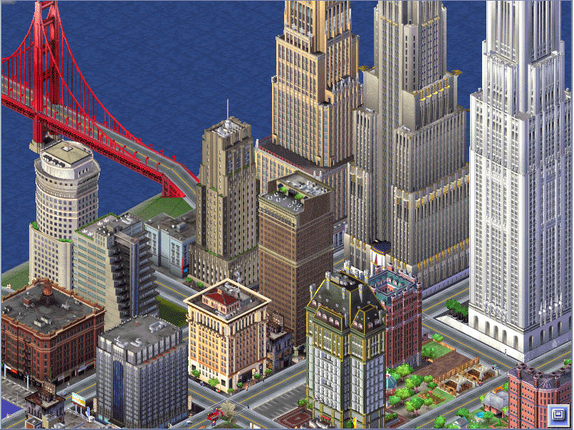
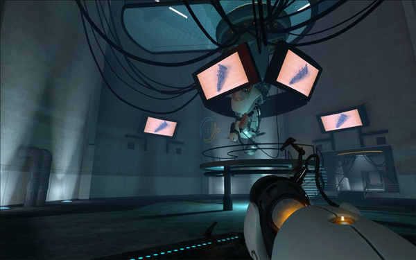

Pourquoi les fins de jeu craignent
L'article original est écrit par Tom Jubert publié par Plot is Gameplay's Bitch (avril 2011).
L'auteur original n'est en aucun cas reponsable de la précision de cette traduction.
La raison pour laquelle les fins de jeu craignent (pour la plupart, naturellement) a déjà été traitée, mais je voulais en parler dans une perspective spécifiquement narrative.
Donc. Les fins de jeux craignent parce qu'elles sont le dernier élément développé, qu'il n'y a plus de budget, que tout le monde est crevé et parce que la plupart des joueurs ne les regardent jamais de toute façon. Il y a deux choses qui me frappent particulièrement : pourquoi les joueurs ne regardent-ils jamais la fin, et pourquoi personne ne parle-t-il de l'histoire ?

Premièrement, je suis un fervent partisan des jeux courts. Les critiques passent beaucoup de temps à estimer si un jeu vous en donne pour votre argent et je peux comprendre cela, mais en réduisant l'équation à « 10h de jeu = 20€ », on s'expose au risque de la promotion du design bâclé. Je l'ai déjà dit, mais je préfère avoir 3h de Portal pour 35€ plutôt que de payer une dizaine d'euros pour une plus d'une centaine d'heure de grinding dans un quelconque RPG, et je prendrai 20h de Mass Effect 2 plutôt que 40h de Dragon Age.
Prenez par exemple Uncharted 2. Il a une des production value les plus élevées que j'ai jamais vues, et pourtant les développeurs ont ressentit le besoin d'allonger sa durée de vie avec des méchants en carton dont les points de vie augmentent sans fin. Le résultat est un dénouement auquel manquent le spectaculaire, le script et le fun du reste du jeu – au nom d'une ou deux heures de bêtises supplémentaires. C'est un cercle vicieux : les joueurs demandent plus de contenu en milieu de jeu, ce contenu est alors dilué, moins de joueurs prennent la peine d'aller jusqu'à la fin, et donc plus d'attention est portée au contenu de milieu de jeu.
Mais à part en supprimant tous les bouche-trous, comment peut-on apporter une conclusion satisfaisante à un jeu dont la majorité du public n'atteint jamais la fin ?
- Supprimez la fin. Certaines des expériences narrative les plus fortes sont générées dynamiquement dans des jeux comme SimCity ou Les Sims.
- Multipliez les fins possibles. Des jeux comme Weird Worlds ou Atom Zombie Smasher encouragent de courtes sessions de jeu d'une heure, mais arrivent à maintenir un déroulement dramatique à mesure que différentes routes sont empruntées par le joueur.
- Forcez la fin du jeu. A moins de lâcher la manette, il est plus ou moins impossible de jouer plus de 7 ou 8 heures à Heavy Rain sans en voir la fin.

Enfin, je pense que la clé du problème réside dans la façon dont on approche la fin du jeu : on l'approche du point de vue du gameplay, et non d'un point de vue narratif.
Quel rapport une « fin » à-t-elle avec le concept de gameplay ? Ce n'est pas une chose absolue – la plupart des jeux encouragent à continuer à jouer après avoir été officiellement terminés en proposant de nouveaux challenges, du multijoueur et bien d'autres choses. Peut-être doit-on le voir comme une question d'échelle, de montée en puissance ; mais évidemment les jeux surenchérissent toujours en termes de taille et en d'intensité — ils semblent capables de faire monter la tension tout au cours du jeu, mais font souvent un bide lorsqu'il n'est plus question de faire monter la tension mais d'atteindre un pic. C'est ce pic que le développement tardif peine souvent à atteindre.
Et ce pic est aussi responsable de l’embarrassant boss de fin de jeu dont-on-doit-encore-discuter. Cela m'abasourdit que tant de jeux intelligents et bien faits se contentent de réduire la conclusion de leur histoire dramatique à cribler de balles un gros bonhomme bleu. Lorsqu'on s'intéresse à la conclusion dans un contexte de gameplay, quel choix a t-on ? On ne peut pas juste envoyer quelques méchants supplémentaires au joueur, mais on ne peut pas non plus ne pas en envoyer, il faut donc offrir quelque chose de différent. Quelque chose comme, je ne sais pas, un énorme type orange avec un point faible qui clignote.
Si on jette un autre regard à tout ceci d'un point de vue narratif en revanche, peut-être doit on se demander « Pourquoi avoir une fin apparentée au gameplay ? ». Je fais mon possible pour lier ensemble histoire et gameplay, mais si le faire signifie abandonner toutes les fantastiques mécaniques polies par les développeurs et qui ont marché tout au long du jeu au profit de grosses boules bleues à 1000 PV, quel intérêt ?
Une fin est un problème d'histoire. Je pense que si nous-autres les développeurs avions appris à faire confiance au gameplay et à la narration pour accomplir leurs tâches respectives, nous pourrions faire une fin de jeu satisfaisante en laissant le gameplay sur sa lancée et en utilisant notre temps et notre budget pour lui donner de l'ampleur avec la narration. Le boss final de Portal – du point de vue du gameplay – était nul. Mais l'histoire l'a transformé en une conclusion satisfaisante. Les fins des deux premiers jeux Penumbra étaient les éléments dont j'étais le plus fier, mais elles n'exploitaient le gameplay que de façon superficielle.

Une de mes astuces favorites quand j'apprenais à écrire était « Commence au début, et continue d'écrire jusqu'à ce que tu aies fini. » Cela peut sembler parfaitement stupide, mais ce que cela signifie, c'est qu'il est inutile de construire artificiellement des tenants et des aboutissants à votre histoire. Si vous ne vous préoccupez que de l'écriture, les choses se feront d'elles mêmes.
Ajouter un commentaire
Commentaires

Moi je souhaiterai évoquer la fin de Mass Effect 3. La série Mass Effect est une oeuvre dans son entier, aucun de ses épisodes de devrait être prit à part. Je fais partie des gens qui ont été extrêmement déçus de ne pas avoir les réponses aux grandes questions du jeu, et à toutes ses incohérences abérantes.
Dans ce type de jeu, où premièrement l'histoire et le fil conducteur du jeu, et non le gameplay( cf le premier épisode encore original ayant échappé à l'actionite aigüe, dont le gameplay et molasson et faiblard),on se tape bien sûr à la fin une série d'ennemis plutôt coriaces en hordes, mais la fin n'a pas de boss final au sens gameplay. Le boss final est en fait une suite de cinématiques et de conversations interactives, dans lesquels des choix cornéliens et en rapport avec toute la progression au cours des 3 épisodes sont proposés.En tant que fan, je trouve cette fin ignoble de par son contenu, mais en tant que futur étudiant en game design, je trouve celà très intelligent d'au lieu d'un quart d'heure de boss à flinguer, c'est 40 minutes de cinématiques et de choix scénaristiques. Sur le plan technique, la lazerisation de Shepard, sa progression jusqu'à la Citadelle et la mise en scène des dialogues (et non leur contenu) est une sacrée réussite.
Puisque tout le monde cite ses exemples de fins de jeux, je voulais moi aussi ajouter ma petite pierre à l'édifice. Grand fan de Final Fantasy, j'ai adoré la fin de FFXIII. Je sais les critiques qu'on lui voue et moi-même ai été quelque peu frustré par la linéarité du soft mais du point de vue narratif et gameplay des combats, tous les ingrédients étaient là pour nous donner une fin sublime alors que dans sa suite, FFXIII-2 m'a laissé sur ma faim avec un très désagréable sentiment de frustration avec ce "à suivre" qui conclut une fin qui démarrait pourtant bien dans le genre "émotion et révélation sur ton dramatique". Visiblement la fin sera approfondie dans un DLC avec Lightning mais une question me taraude: POURQUOI? Pour des raisons commerciales certes mais en tant que fan de la série, j'ai été assez déçu, d'autant plus que la fin initiale d'FFXIII n'appelait pas forcément de suite et concluait de manière sublime sur la victoire des héros sur leur destin.
Je pense que les jeux nouvelles générations sont finalement si développés dans leur background et leur scénario que les développeurs ne savent plus comment leur donner une bonne fin.
En ce qui concerne les fins multiples, j'ai moi aussi quelques réserves sur le sujet. Pour certains jeux, elles sont complètement anecdotiques et refaire le jeu dans ces conditions ne motive pas forcément le joueur. Deus Ex: Human Revolution, que j'ai adoré, propose plusieurs fins qui n'ont de différentes que le discours d'Adam Jensen mais au moins le joueur peut les voir les quatre à la suite en rechargeant sa partie juste avant de la déclencher et peut donc apprécier les différentes conclusions sans qu'on lui force la main pour refaire le jeu. Autre remarque concernant la fin de ce jeu, c'est qu'elle ne nous ai pas donnée suite à un combat de boss et d'ailleurs tous les combats peuvent être évités dans le jeu hormis 4 boss. C'est une alternative intéressante que de laisser au joueur la liberté de choisir sa façon de jouer et d'arriver au terme de l'aventure.
Dernier point que je voulais aborder, et il concerne cette fois le lien fait entre le gameplay et la narration. Je prendrai encore FFXIII comme exemple et un détail qui m'a plu dans les derniers combats c'est lorsque le boss condamne le héros à mourir dès le début du combat. Puisque dans l'histoire les persos principaux sont condamnés et maudits, je trouve qu'appliquer cette malédiction au cours même du combat final permet de rappeler au joueur quels dangers encours les héros. Il en va de même pour FFX où lors du combat final contre Sin, on découvre que cette immense créature n'est qu'une invocation de Yu Yevon, un ancien roi devenu une sorte de petit monstre larvaire qu'un simple objet de soin suffit à tuer. Là où on s'attend à un combat épique, oser faire un boss aussi faible est ingénieux car ce choix s'inscrit pleinement dans le scénario et bouleverse un peu les codes des RPG où le boss final est souvent un dieu, un dragon ou un roi tyran! Bref, je n'apporte rien à cet article mais c'est un sujet qui m'inspire!

Le même problème était déjà là dans Fable II, c'est malheureux qu'ils refassent les mêmes erreurs d'une fois sur l'autre. Je pense que dans le genre « coup dans l'eau » la fin de Fable II était assez incroyable. La plupart des joueurs se disent « Hein !? Quoi ? C'était ça la fin ? » alors que le générique démarre et qu'ils viennent de voir une cut-scene mollassonne où le grand méchant se fait tuer sans même qu'on ait à le combattre.

Perso le truc que j'aime pas, c'est "la fin ou on joue encore derriere". J'ai recemment "fini" fable3, mais il y'a encore toute une partie du jeu jouable après la fin de la quête principale. J'ai essayé, mais c'est vraiment dur de s'accrocher: pourquoi continuer alors que j'ai fini ? Ca n'a aucun sens, le mal est éradiqué, j'ai sauvé tout le monde, alors pourquoi je dois taper des squelettes encore ? En plus, y'a plus l'objectif final qui me guidait dans le jeu. Du coup, j'arrive pas à savoir si cette fois, c'est la fin fin, ou si je dois encore taper des squellettes.

C'est vrai que dans la plupart des fins se finissent presque de la même manière. Du moins, les jeux d'actions.
Prenons l'exemple de Diablo II où chacun d'entre nous choisi un personnage pour aller tuer du vilain méchant jusqu'au boss super costaud. Une fois battu, on se dit "enfin". Sauf que rapidement vous vous rendez compte que vous n'avez fait que 1/5 ème du jeu. Le jeu en lui-même est prenant, mais au final on n'était plus que 2 pour le finir.
Les jeux d'énigmes c'est pareil, sauf qu'au lieu d'avoir des réflexes, il faut de la réflexion (nuance). Dans la série Myst, c'est assez fourbe, car pendant tous le jeu, le joueur peut prendre tout son temps pour résoudre une énigme. Et à la fin du jeu il doit faire le bon choix en moins de 30 secondes, sinon il meurt ! Original, mais frustrant.
Je ne sais pas si l'originalité fait une bonne fin, mais en tout cas le défi semble plutôt réussi dans les jeux ci-dessous :
Command & Conquer 3 : La planète est en danger et vous devez la sauver. Vous jouez d'abord les gentils : le GDI, ensuite les méchants : le NOD. Une fois que vous avez fini le jeu, vous vous rendez compte que la planète est loin d'être sauvée. En fait, ce jeu est surtout basé sur le gameplay. (mauvais exemple :p )
Donkey Kong 64 sur Nintendo 64(Oui, je sais, on ne traite principalement que sur les jeux PC mais j'avais envie de vous en parler) : On progresse à travers le jeu en ramassant les bananes d'or et en combattant de "Gropabô" comme dans la plupart des jeux d'actions. Arrivé au boss final, au lieu de se retrouver au sommet d'une tour entouré d'éclairs dans une ambiance dramatico-apocalyptique, nos héros se retrouve…dans un ring. Si, si ^^ Dans un ring, où le grand méchant enfile des gants de boxes et ses sbires qui l'encourage. D'ailleurs, quand vous recevez un coup, vous pouvez entendre des acclamations. Mais quand c'est vous qui donnez une beigne, c'est la hué.
Un autre point qu'il me semble essentiel de soulever, quand la narration est inexistante et que le jeu est purement "gameplay", on se fiche un peu de la fin. Je pense à "Tetris" ou à "SimCity". Mais je pense que c'est pareil pour certains jeux d'actions commes les "Shoot them up" ou encore "Sonic", on joue, on s'amuse et c'est tout ! Pas besoin d'une super fin !
Bonjour :),
Pour commencer, je pense que la raison principale pour laquelle la fin est souvent dénigré tiens du fait que celle ci ne rentre pas en adéquation avec le gameplay du jeux.
Si l'on prends un jeux comme Dofus,baldur gate,… le principal "pousse pousse" du jeux tiens au fait qu'on doit devenir toujours plus fort, pour taper des trucs toujours plus fort. Il est tout a fait possible de jouer tout le jeux sans connaitre une ligne du background qui soutient le monde, vue qu'il n'intervient pas dans le résultat que cela pourrait avoir dans la partie du joueur. Du coup la fin est du même acabit, en décalage avec le joueur qui s'en fou du fait qu'il n'a de toute façon pas d’impacts dessus ; vue que toute manière, ça façon de jouer n'a jamais été en lien avec (on note aussi, le fait que ce genre de monde est mille fois revue et a un background foireux, très long, souvent décousue, et qu'on se doute bien que ça va se finir par un méchant pas beau qui veut encore une fois dominer le monde pour changer).
Si l'on prend SimCity, la fin est attendue car c'est la somme des efforts de tout ce que le joueur a fait qui donne la tonalité de fin. Il n'en est pas exclue.
Fallout2 avait présenté un fin intéressant en n'en montrant qu'une seul, mais qui prenait en compte tout les choix que le joueur avait prie en cours de jeux (aider les esclavagistes ou pas,…).
Pour finir, je pense qu'une bonne fin ne va pas s'en lier le gameplay qui joue le rôle de déroulement narratif et l'histoire qui devrait le soutenir. Chacun influençant sur l'autre pour maintenir le lien.
Au fait je suis l'anonyme. ^^
C'est vrai que les fins de jeux comptent parmi les plus mauvaises mises en scène dans le jeu vidéo… Je ne m'étais pas rendu compte à quel point. Peut être parce que la fin fait partie selon moi de ce qu'il faut le mieux traiter (puisque non content de ne pas frustré le joueur il est en principe de bon ton de lui donner envie de rejouer ensuite).
De là à aller chercher des astuces du côté du nombre de fins possible, je ne suis pas vraiment d'accord avec l'auteur. Pour avoir expérimenté la chose, les jeux avec plusieurs fins m'ont toujours gonflé au possible. Exemple, Star Ocean: The second Story. Là le problème a été cité: quand un jeu se finit en minimum trente heures avec du leveling régulier une une foule de quêtes annexes, comment les développeurs ont pu décemment penser que leurs joueurs auraient le courage de se taper plusieurs fois de suite l'histoire complète pour voir les différentes fins? Et pour quelle différence au fait? Pour ce problème, je passe à un autre jeu: Dark Messiah of Might and Magics. Combien de fins différentes? Je ne sais plus. En tout cas, ça ne se joue que sure de choix faits vers la fin du jeu, et la différence entre chaque est de l'ordre de l'anecdote: soit le héros est gentil, soit il est méchant. Mais ça se passe toujours au même endroit, avec la même cutscene qui change légèrement de déroulement, la voix off qui fait son speech et un générique.
Si les développeurs ratent les fins, les raisons en sont citées en début d'article. A ce moment là je vois mal en quoi multiplier les fins possibles bénéficierait à un jeu dont le dénouement est développé à l'arrache. Peut-être que se concentrer en premier lieu sur le respect des phases narratives, plutôt que que s'employer à augmenter en permanence le niveau d'awesomeness des phases de jeu, ou simplement en pensant autrement que narration vidéoludique +/-= narration cinématographique, les choses seraient mieux traitées.
L'absence de fin ne convient pas à tous les styles de jeux, loin s'en faut.
Idem pour les fins forcées… verrait-on dans un Zelda débarquer Ganon devant Link même si tous les artefacts nécessaires pour le vaincre n'ont pas été rassemblés? Remarquez, comme événement au sein d'unn Zelda ce serait tout simplement bienvenu, le vilain poursuivant Link autant que Zelda pour leur voler un fragment de Triforce, il est tout de même étonnant de constater qu'un personnage aussi increvable dès qu'il s'agit de s'approprier la puissance des deux autres élus passe l'intégralité de tous les épisodes où il est présent à attendre en haut d'une tour la venue d'un Link surentraîné et armé jusqu'aux dents contre ses forces maléfiques… Le seul épisode à casser (un peu) la pantouflardise du méchant, c'est wind waker, qui monte les apparitions de Ganon au nombre impressionnant de… quatre.
Mais à bien y réfléchir, Ganon n'est pas un cas isolé. Le syndrome du "stand-by villain" est présent partout. C'est même l'un des piliers de la fin bâclée ou trop rapide dans les action-RPG et RPG classiques. Je ne pensais pas dire ça un jour mais finalement la présence du dragon dans WoW Cataclysm, bien qu'étant un événement-gadget pourrave, avait au moins le mérite d'essayer de sortir de ça.
Pour pas mal de phases de gameplay "types", on retrouve un problème récurrent: malgré les moyens actuels, sous couvert de scènes de la mort, les histoires et pas seulement les fins de jeux continuent (en majorité) à fonctionner selon une logique de jeu 16 bits: Point A > Point B > Bla bla & Boss (ou inversement). Tout le reste n'est qu'enrobage pour faire illusion en façade et cacher ça. Est-ce efficace? Personnellement je ne trouve pas.
Une narratologie adaptée au media, mise en pratique et plus seulement théorisée en convention, serait un pas réel vers des jeux vidéos qui trouvent une rélle manière de se tenir à tous les niveaux.
C'est un travail de fond. Il a fallu des siècles à la littérature pour se découvrir des règles qui garantissent un équilibre narratif parfait pour le lecteur. Dans le monde vidéoludique, il faut ajouter le gameplay et la place très spécifique du joueur à l'équation et mélanger toutes les notions dans une harmonie totale. Le travail va être long, surtout sur un format aussi commercial…